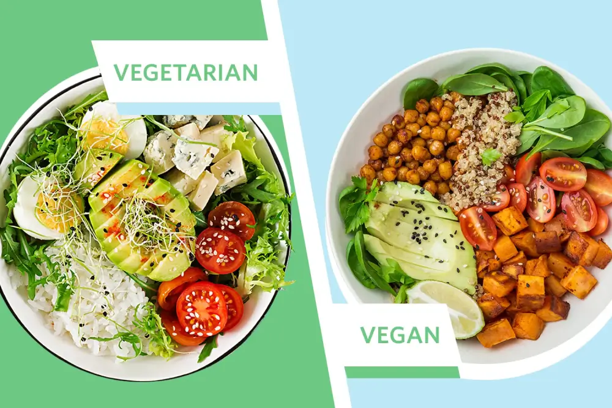

Nutrition
April 28, 2025
•
6 min read
Vegan vs Plant-Based
Understand the real difference between vegan and plant-based lifestyles. Learn how they differ in purpose, scope, and how to choose what suits you.